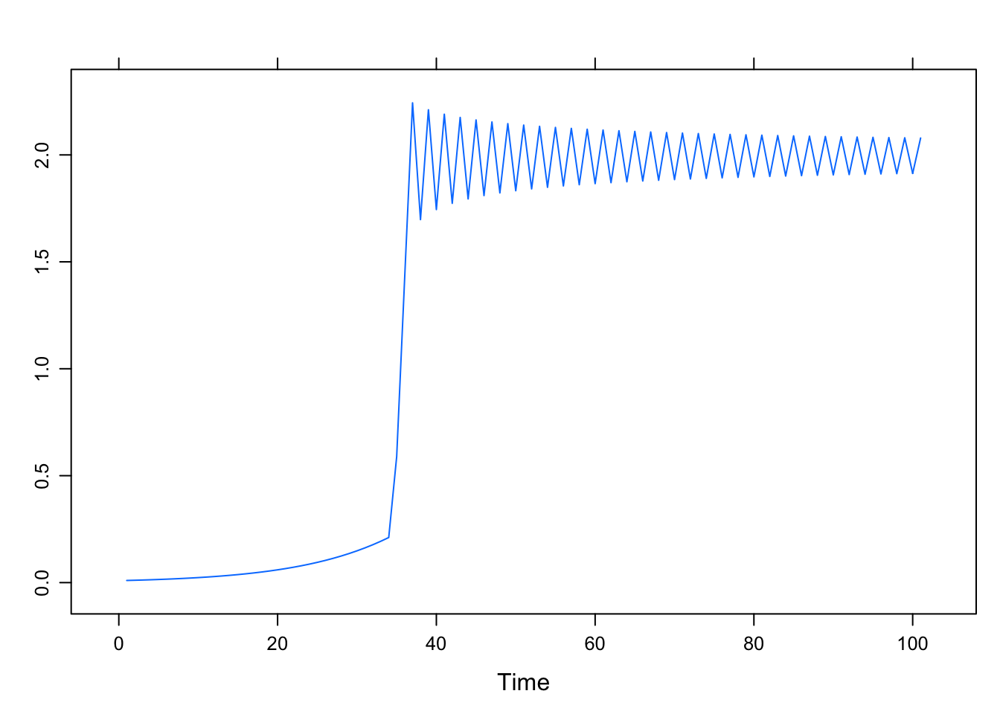
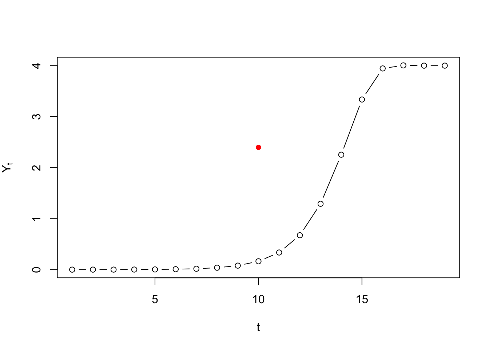
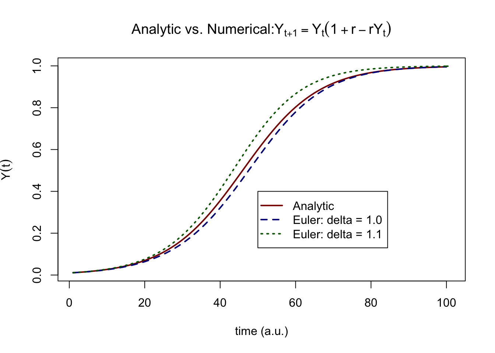
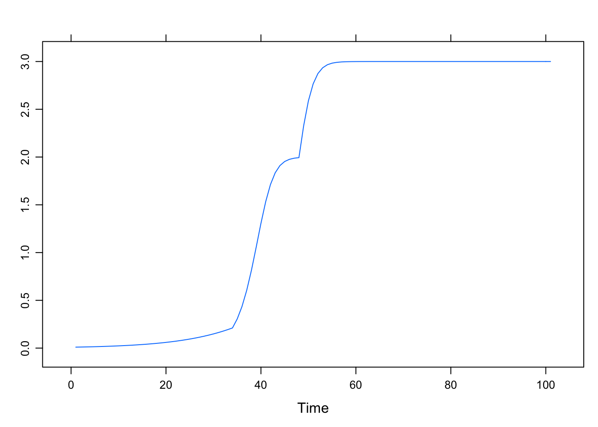
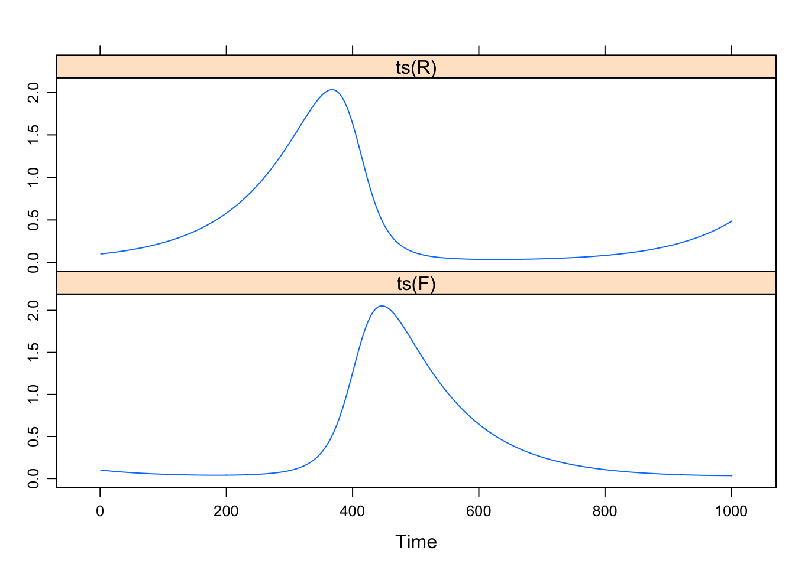

A.1 Linear and logistic growth
Solutions in a spreadsheet
The solutions to iterating the Linear Map and theLogistic Map in a spreadsheet can be found in this GoogleSheet.
Solutions in R
Coding the difference equations in Matlab and R is always easier than using a spreadsheet. One obvious way to do it is to use a counter variable representing the iterations of time in a for ... next loop. The iterations should run over a vector (which is the same concept as a row or a column in a spreadsheet: An indexed array of numbers or characters). The first entry should be the starting value, so the vector index \(1\) represents \(Y_0\).
The loop can be implemented a number of ways, for example as a function which can be called from a script or the command / console window. In R working with functions is easy, and very much recommended, because it will speed up calculations considerably, and it will reduce the amount of code you need to write. You need to gain some experience with coding in R before you’ll get it right. In order to get it lean and clean (and possibly even mean as well) you’ll need a lot of experience with coding in R,therefore, we will (eventually) provide you the functions you’ll need to complete the assignments. All you have to do is figure out how to use, or modify them to suit your specific needs.
To model the autocatalytic growth equations we provide a function growth.ac(), which is able to simulate all of the processes discussed in the lectures. Using just a few lines of code, each of the 4 difference equations used in the assignments can be simulated. Basically the code block below contains the solutions to the Linear Map, the stylized Logisitc Map and the Van Geert model for cognitive growth.
growth.ac <- function(Y0 = 0.01, r = 1, k = 1, N = 100, type = c("driving", "damping", "logistic", "vanGeert")[1]){
# Create a vector Y of length N, which has value Y0 at Y[1]
if(N>1){
Y <- as.numeric(c(Y0, rep(NA,N-2)))
# Conditional on the value of type ...
switch(type,
# Iterate N steps of the difference function with values passed for Y0, k and r.
driving = sapply(seq_along(Y), function(t) Y[[t+1]] <<- r * Y[t] ),
damping = k + sapply(seq_along(Y), function(t) Y[[t+1]] <<- - r * Y[t]^2 / k),
logistic = sapply(seq_along(Y), function(t) Y[[t+1]] <<- r * Y[t] * ((k - Y[t]) / k)),
vanGeert = sapply(seq_along(Y), function(t) Y[[t+1]] <<- Y[t] * (1 + r - r * Y[t] / k))
)}
return(ts(Y))
}
# Call the function with default settings and r = 1.1
Y <- growth.ac(r = 1.1)Some notes about this function:
- To select which growth process to simulate, the argument
typeis defined which takes the valuesdriving(default),damping,logisticandvanGeert.- The statement
switch(type, ...)will iterate an equation based on the value oftype.
- The statement
- A
time seriesobject is returned due to the functionts(). This is a convenient way to represent time series data, it can also store the sample rate of the signal and start and end times.- Most of the basic functions, like
plot()andsummary()will recognise a time series object when it is passed as an argument and use settings appropriate for time series data.
- Most of the basic functions, like
- The
sapply()function iterates \(t\) from \(1\) to the number of elements in \(Y\) (seq_along(Y)) and then applies the function. - The double headed arrow
<<-is necessary because we want to update vector \(Y\), which is defined outside thesapply()environment.
The time series object
The time series object is expected to have a time-dimension on the x-axis. This is very convenient, because R will generate the time axis for you by looking at the time series properties attribute of the object. Even though we are not working with measurement ourcomes, consider a value at a time-index in a time series object a sample:
Start- The value of time at the first sample in the series (e.g., \(0\), or \(1905\))End- The value of time at the last sample in the series (e.g., \(100\), or \(2005\))Frequency- The amount of time that passed between two samples, or, the sample rate (e.g., \(0.5\), or \(10\))
Examples of using the time series object.
# Get sample rate info
tsp(Y)[1] 1 100 1# Extract the time vector
time(Y)Time Series:
Start = 1
End = 100
Frequency = 1
[1] 1 2 3 4 5 6 7 8 9 10 11 12 13 14 15 16 17
[18] 18 19 20 21 22 23 24 25 26 27 28 29 30 31 32 33 34
[35] 35 36 37 38 39 40 41 42 43 44 45 46 47 48 49 50 51
[52] 52 53 54 55 56 57 58 59 60 61 62 63 64 65 66 67 68
[69] 69 70 71 72 73 74 75 76 77 78 79 80 81 82 83 84 85
[86] 86 87 88 89 90 91 92 93 94 95 96 97 98 99 100For now, these values are in principle all arbitrary units (a.u.). These settings only make sense if they represent the parameters of an actual measurement procedure.
It is easy to adjust the time vector, by assigning new values using tsp() (values have to be possible given the timeseries length). For example, suppose the sampling frequency was \(0.1\) instead of \(1\) and the Start time was \(10\) and End time was \(1000\).
# Assign new values
tsp(Y) <- c(10, 1000, .1)
# Time axis is automatically adjusted
time(Y)Time Series:
Start = 10
End = 1000
Frequency = 0.1
[1] 10 20 30 40 50 60 70 80 90 100 110 120 130 140
[15] 150 160 170 180 190 200 210 220 230 240 250 260 270 280
[29] 290 300 310 320 330 340 350 360 370 380 390 400 410 420
[43] 430 440 450 460 470 480 490 500 510 520 530 540 550 560
[57] 570 580 590 600 610 620 630 640 650 660 670 680 690 700
[71] 710 720 730 740 750 760 770 780 790 800 810 820 830 840
[85] 850 860 870 880 890 900 910 920 930 940 950 960 970 980
[99] 990 1000Plotting a ts object as a time series
Depending on which packages you use, there will be different settings applied to time series objects created by ts(). Below are some examples of differences between plotting routines.
require(lattice) # Needed for plotting
require(latticeExtra) # Needed for plotting
# stats::plot.ts
plot(growth.ac(r = -.9), lwd = 2, main = "stats::plot.ts")
# lattice::xyplot.ts
xyplot(growth.ac(r = -.9), lwd = 2, main = "lattice::xyplot.ts")
Plotting multiple time series in one figure
Plot multiple timeseries in frames with plot.ts() in package::stats. This function takes a matrix as input, here we use cbind( ... ).
# stats::plot.ts
plot(cbind(growth.ac(r = 0.9),
growth.ac(r = 1.0),
growth.ac(r = -0.8)
),
yax.flip = TRUE, ann = FALSE, col = "blue", frame.plot = TRUE)
title(main = expression(paste("Unrestricted Growth: ",Y[t+1]==r*Y[t])),
ylab = "| r = -0.8 | r = 1 | r = 0.9 |",
xlab = "time (a.u.)")
Plot multiple timeseries in one graph with ts.plot() in package::graphics. This function can handle multiple ts objects as arguments.
# graphics::ts.plot
ts.plot(growth.ac(r = 0.9),
growth.ac(r = 1),
growth.ac(r = -.8),
gpars = list(xlab = "time (a.u.)",
ylab = expression(Y(t)),
main = expression(paste("Unrestricted Growth: ",Y[t+1]==r*Y[t])),
lwd = rep(2,3),
lty = c(1:3),
col = c("darkred","darkblue","darkgreen")
)
)
legend(70, -0.015, c("r = 0.9","r = 1.0", "r = -0.8"), lwd = rep(2,3), lty = c(1:3), col = c("darkred","darkblue","darkgreen"), merge = TRUE)
Use xyplot() in package::lattice to create a plot with panels. The easiest way to do this is to create a dataset in so-called “long” format. This means the variable to plot is in 1 column and other variables indicate different levels, or conditions under which the variable was observed or simulated.
Function ldply() is used to generate \(Y\) for three different settings of \(r\). The values of \(r\) are passed as a list and after a function is applied the result is returned as a dataframe.
require(plyr) # Needed for function ldply()
# Create a long format dataframe for various values for `r`
data <- ldply(c(0.9,1,-0.8), function(r) cbind.data.frame(Y = as.numeric(growth.ac(r = r)),
time = as.numeric(time(growth.ac(r = r))),
r = paste0("r = ", r)))
# Plot using the formula interface
xyplot(Y ~ time | r, data = data, type = "l", main = expression(paste("Unrestricted Growth: ",Y[t+1]==r*Y[t])))
One can also have different panels represent different growth functions.
# Create a long format dataframe for combinations of `type` and `r`
param <- list(driving = 1.1,
damping = 0.9,
logistic = 2.9,
vanGeert = 1.9)
# Use the `names()` function to pass the `type` string as an argument.
data <- ldply(seq_along(param), function(p){
cbind.data.frame(Y = as.numeric(growth.ac(r = param[[p]], type = names(param[p]))),
time = as.numeric(time(growth.ac(r = param[[p]], type = names(param[p])))),
type = paste0(names(param[p]), " | r = ", param[p]))
})
# Plot using the formula interface
xyplot(Y ~ time | factor(type), data = data, type = "l", scales = c(relation = "free"),
main = "Four Autocatalytic Growth Models")
The return plot
To create a return plot the values of \(Y\) have to be shifted by a certain lag. The functions lead() and lag() in package::dplyr are excellent for this purpose (note that dplyr::lag() behaves different from stats::lag()).
# Function lag() and lead()
require(dplyr)
# Get exponential growth
Y1 <- growth.ac(Y0 = .9, r = .9, N = 1000, type = "driving")
# Get logistic growth in the chaotic regime
Y2 <- growth.ac(r = 4, N = 1000, type = "logistic")
# Use the `lag` function from package `dplyr`
op <- par(mfrow = c(1,2), pty = "s")
plot(lag(Y1), Y1, xy.labels = FALSE, pch = ".", xlim = c(0,1), ylim = c(0,1), xlab = "Y(t)", ylab = "Y(t+1)",
main = expression(paste(Y[t+1]==r*Y[t])))
plot(lag(Y2), Y2, xy.labels = FALSE, pch = ".", xlim = c(0,1), ylim = c(0,1), xlab = "Y(t)", ylab = "Y(t+1)",
main = expression(paste(Y[t+1]==r*Y[t]*(1-Y[t]))))
par(op)Use l_ply() from package::plyr to create return plots with different lags. The l_ before ply means the function will take a list as input to a function, but it will not expect any data to be returned, for example in the case of a function that is used to plot something.
# Explore different lags
op <- par(mfrow = c(1,2), pty = "s")
l_ply(1:4, function(l) plot(lag(Y2, n = l), Y2, xy.labels = FALSE, pch = ".", xlim = c(0,1), ylim = c(0,1), xlab = "Y(t)", ylab = paste0("Y(t+",l,")"), cex = .8))
par(op)A.1.1 Solutions in Matlab
For Matlab we provide an example of a simple for ... next loop, which should be easy to translate to R if you want to.
Linear Map
%%%%%%%%%%%%%% COMPUTING TRAJECTORIES OF THE LOGISTIC MAP %%%%%
%% Set these parameters to manipulate the logistic map
r = 1,1; % Control parameter value
Y0 = 0.01; % Initial condition
N = 100; % Number of iterations
%%
Y = [Y0; NaN(length(1:(N-1)),1)]; % This creates a vector Y of length N
% iterate values
for t = 1:(N-1)
Y(t+1) = r*Y(t);
end
%% Graphs
subplot(2,1,1)
% Create a graph the time series
figure(1);
set(gcf,'Color','white');
plot(Y,'k');
xlabel('Time (discrete)')
ylabel('Time Evolution of Y')
title([{'Linear Map'},{['Y_0 = ' num2str(Y0) ', r = ' num2str(r)]}])
subplot(2,1,2)
% Create a graph the return plot
set(gcf,'Color','white');
plot(Y(1:length(Y)-1),Y(2:length(Y)),'.k');
xlabel('Y(t)')
ylabel('Y(t+1)')
title([{'Return Plot'},{['Y_0 = ' num2str(Y0) ', r = ' num2str(r)]}])
axis squareLogistic Map
%%%%%%%%%%%%%% COMPUTING TRAJECTORIES OF THE LOGISTIC MAP %%%%%
%% Set these parameters to manipulate the logistic map
r = 4; % Control parameter value
Y0 = 0.08; % Initial condition
N = 100; % Number of iterations
%%
Y = [Y0; NaN(length(1:(N-1)),1)]; % This creates a vector Y of length N
% iterate values
for t = 1:(N-1)
Y(t+1) = r*Y(t)*(1-Y(t));
end
%% Graphs
subplot(2,1,1)
% Create a graph the time series
figure(1);
set(gcf,'Color','white');
plot(Y,'k');
xlabel('Time (discrete)')
ylabel('Time Evolution of Y')
title([{'Logisitc Map'},{['Y_0 = ' num2str(Y0) ', r = ' num2str(r)]}])
subplot(2,1,2)
% Create a graph the return plot
set(gcf,'Color','white');
plot(Y(1:length(Y)-1),Y(2:length(Y)),'.k');
xlabel('Y(t)')
ylabel('Y(t+1)')
title([{'Return Plot'},{['Y_0 = ' num2str(Y0) ', r = ' num2str(r)]}])
axis squareSolution Logistic Map - Matlab